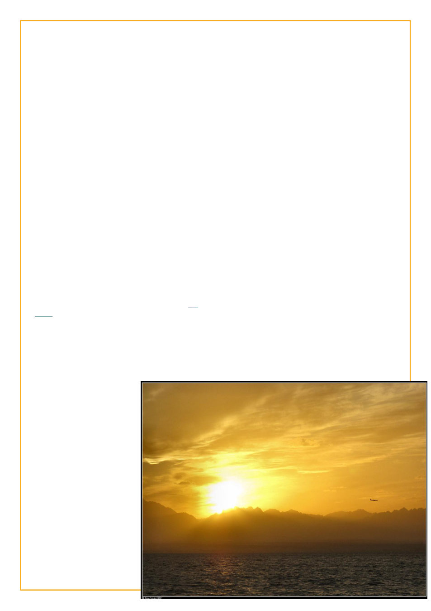

season I’d be writing entries cramped in my narrow
bunkspace on my laptop in the red light of the hold as
the ship rocked around me, hoping to come ashore
near somewhere with wifi before the deadline.
Miraculously I managed to find time for this and the
requesite shore wi-fi for each of the next five weeks
until eliminated:
2010-5-3 – Well, I’ve been eliminated from
Season 6 of LJ Idol. I think the circumstances
of my elimination are rather representative of
my experience this season, namely, I wasn’t
there. I was informed of my elimination via
texts from several of my friends who are in the
game, much as I found out about most of the
prompts, and it would be several days before I
got a chance to get online and actually see the
announcement for myself. For most of this
season I’ve had barely any internet access.
This season I’ve made my LJ Idol
submissions from Istanbul, the Sinai desert,
Cairo, New York City, Orange County, Astoria
WA, Aberdeen WA, Garibaldi WA, Port Angeles
WA, Sequim WA, and Friday Harbour WA.
Often it was the only half hour I was online the
entire week.
The entry I got eliminated on, fittingly
called “the Fall,” I wrote under less than ideal
circumstances late late one night (An
entry begun at nearly 2am in the aft cabin of
the boat surrounded by empty beer bottles and
whiskey glasses, written largely from memory
about obscure historical facts, finished around
3 with reveille only four hours away... so I think
I at least went out with style).
My only regret is that I
have had time to read hardly
anyone’s entries for most of
this season. But on the bright
side now I won’t have to stay
up till 0300 on a night I have
reveille at 0700 to write an
entry, or shiver on a curb
outside a hotel lobby in the
middle of the night like some
kind of crack addict just so I
could leech their precious
precious intertrons.
And a Wise and Serious
Confession
So I have something to
confess regarding
wiseosiris. That’s right...
wait for it..... A number of
people have seemed to find great amusement
dropping hints that I’m Wiseosiris, leaving me
smug knowing comments about one so wise and
serious as myself or such. Well... here’s the
secret. I am not Wiseosiris. I have written
exactly one guest post early on for wiseo and
that is all.
And because I wrote that guest post I got
to spend precious minutes of my internet time
in that little hut of an internet cafe in Sinai
during the second week reading an email
informing me that because I wrote that, I was
banned from proceeding beyond the top ten this
season. Well that didn’t end up being relevant
but it’s a lesson I didn’t know and I suppose
potential contenders should know. And wasted
several precious minutes of internet time.
But yeah, I have heretofore not denied being
Wiseo because I do believe the livejournal
should not be associated with anyone, but
seriously, it is not me and it is silly when you
smugly imply you know it is.
Anywhom I don’t even have time to really
compose a decent goodbye post here, which
again, is kind of indicative of my whole internet
situation here.
You probably won’t be seeing me in the
home game, I probably won’t be commenting to
your entries, I’ll be lucky if I have time to
comment to comments to my own entries, but
best of luck to everyone, I’ll always be there in
spirit, hopefully I’ll see you all in Season VII,
and so long and thanks for all the (cat)fish
[there seemed to be some running catfish joke
that season].
 LiveJournal
LiveJournal Dreamwidth
Dreamwidth